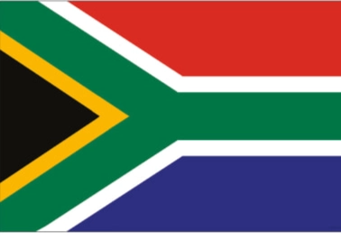

Jacqueline Mufetu
About Me
My name is Jacqueline Mufetu, born in Harare, Zimbabwe, and currently based in Cape Town, South Africa. I am an ambitious and adventurous young woman who enjoys discovering new things and embracing challenges. At present, I am pursuing Software Development studies with BYU Pathway – Idaho, and I am loving the journey of exploring the world of technology. This field excites me because it allows me to create, innovate, and continuously grow in knowledge.
South Africa / Capetown
South Africa is often called the "Rainbow Nation" for good reason—it's a vibrant blend of cultures, languages, and traditions. With 11 official languages and a history shaped by both struggle and resilience, the country pulses with diversity. From the rhythmic beat of Zulu dances to the soulful harmonies of isiXhosa songs, every community adds its own thread to the national fabric.